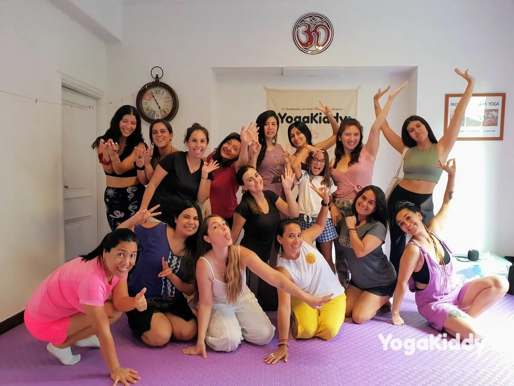
El pasado fin de semana del 04 y 05 de febrero de 2023, un grupo de mujeres, mamás o profesionales de la educación, tuvieron la oportunidad de participar en un curso de formación de yoga para niños de dos días (18 horas) en la Academia del Yoga Eliodoro Yáñez, ubicada en la comuna de Providencia, Santiago.
El curso fue organizado por YogaKiddy y fue una experiencia única para todos los participantes. Se abordaron temas relacionados con la educación de los niños a través del yoga, así como también se enseñaron técnicas específicas para ayudar a los niños a desarrollar habilidades en el yoga.
Los participantes tuvieron la oportunidad de practicar y aprender los movimientos del yoga para niños. Además, se les dio la oportunidad de hacer una profunda exploración de la filosofía del yoga para así poder conectar mejor con los niños y ayudarlos a desarrollar una consciencia profunda de sí mismos. Además, cada participante fue equipado con material exclusivo físico y digital de YogaKiddy para que pudieran comprender mejor cada tema.
Los profesores que impartieron el curso fueron profesionales experimentados que se especializan en enseñar yoga para niños. Esto permitió a los participantes obtener la información necesaria para brindar a sus alumnos una experiencia segura y divertida al practicar yoga.
En conclusión, el curso de formación de yoga para niños de dos días fue una experiencia maravillosa y edificante para todos los participantes. Se les dio la oportunidad de profundizar en la filosofía del yoga para mejorar su enseñanza y comprensión de esta disciplina. Además, todos los participantes se llevaron consigo material exclusivo físico y digital de YogaKiddy para poder seguir aprendiendo y practicando yoga con los niños.
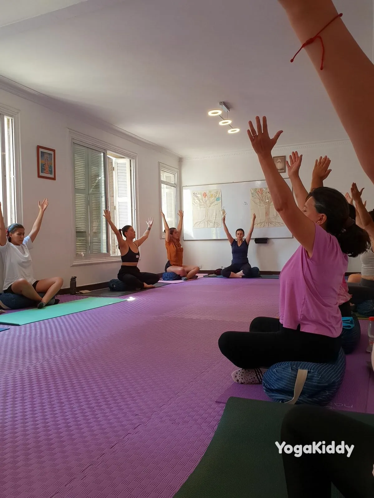
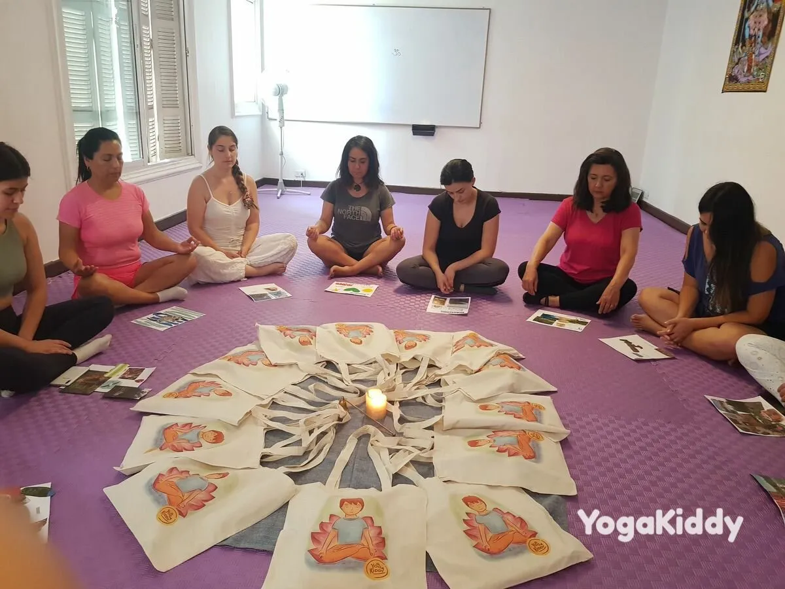
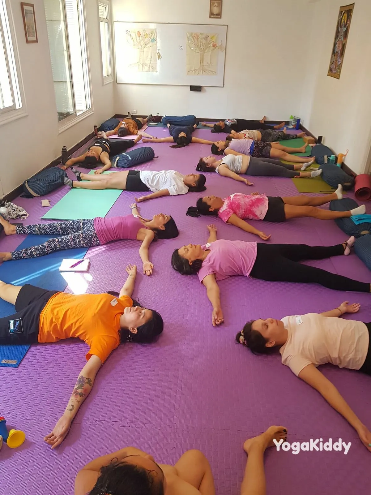
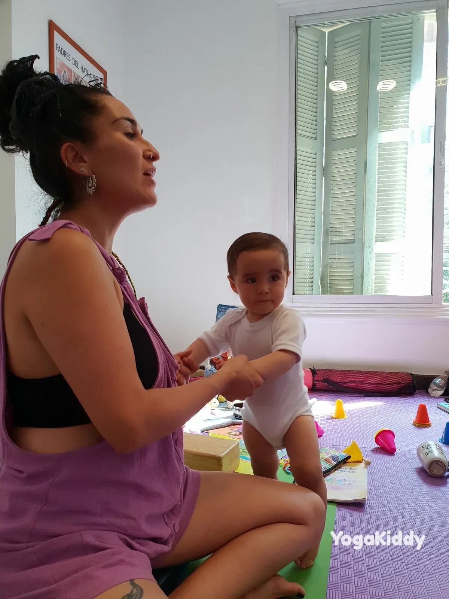
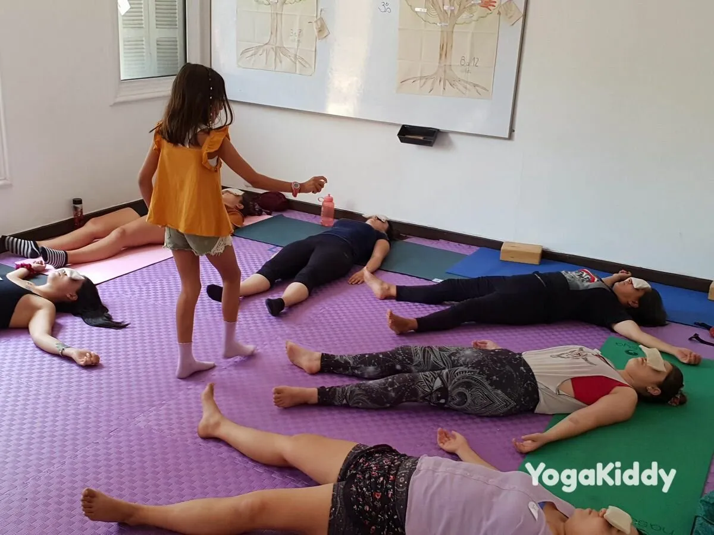
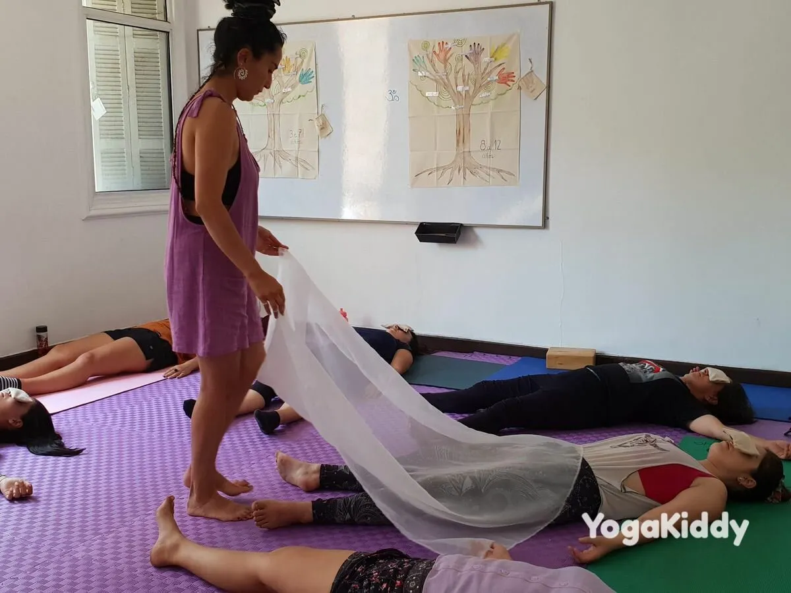
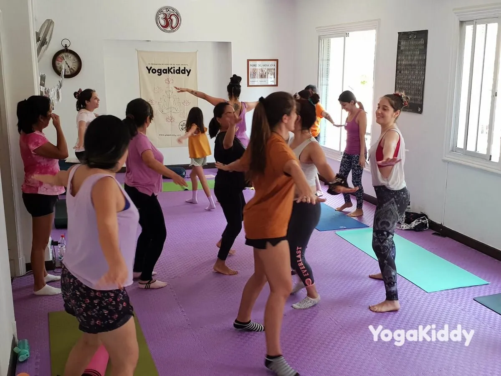
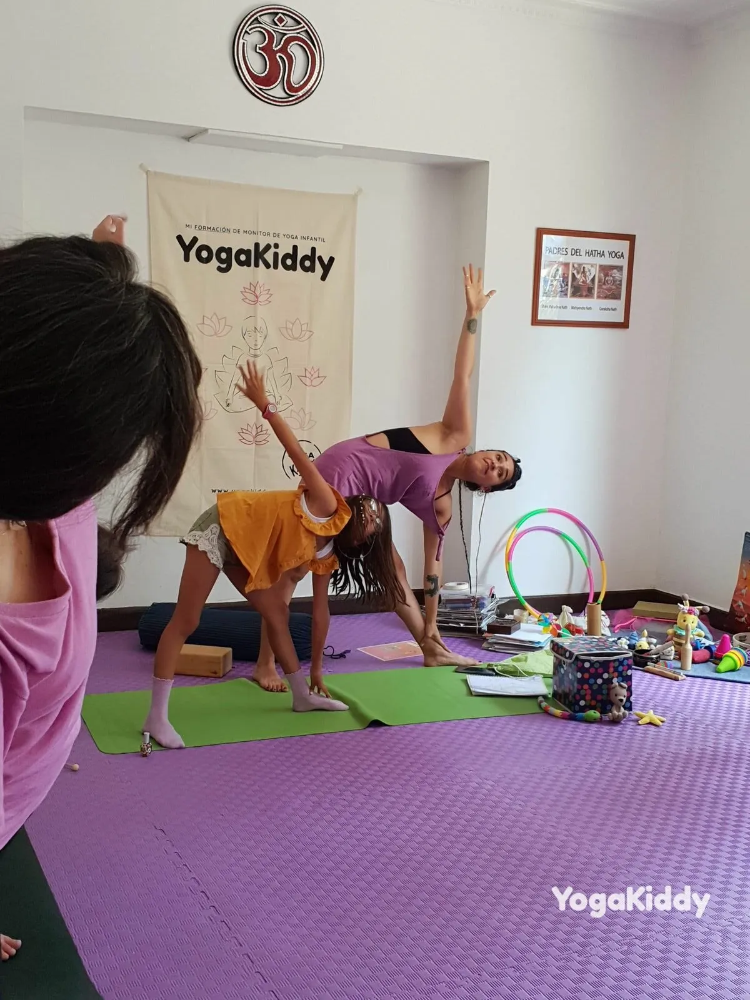
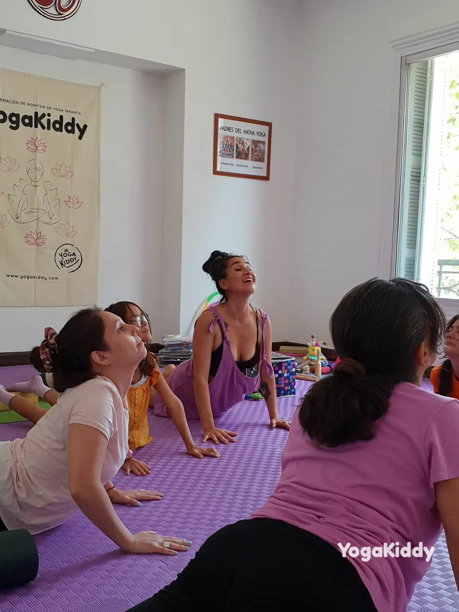
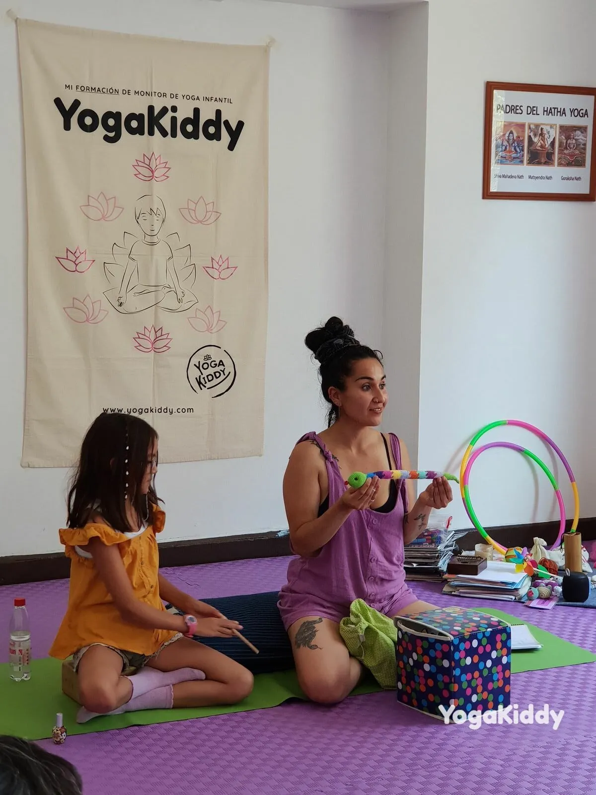
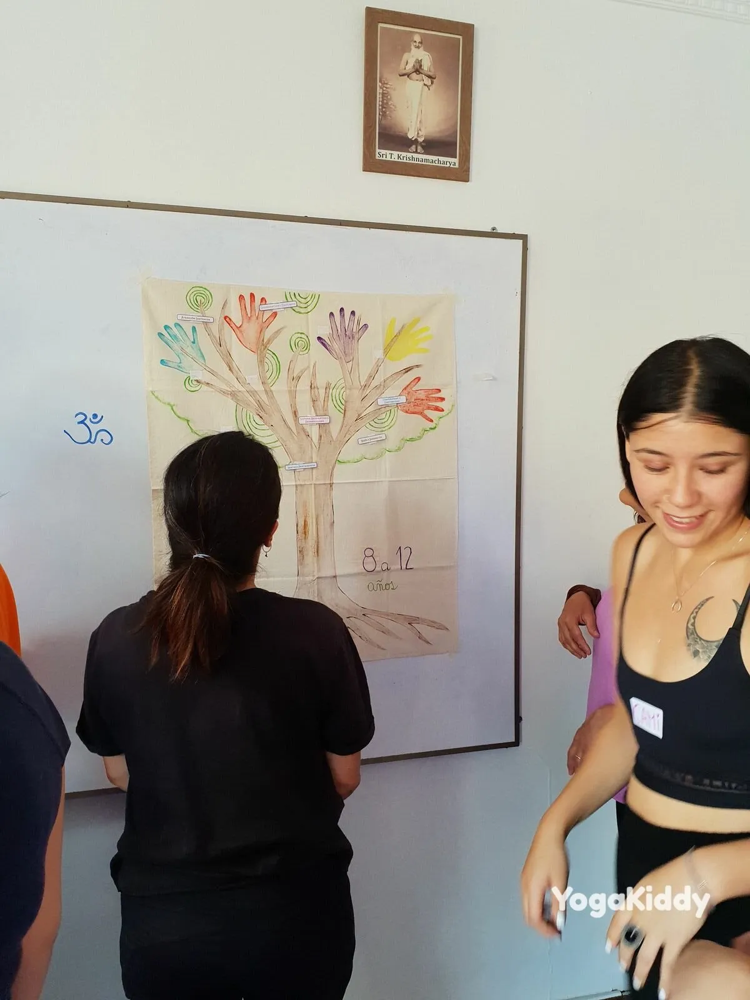
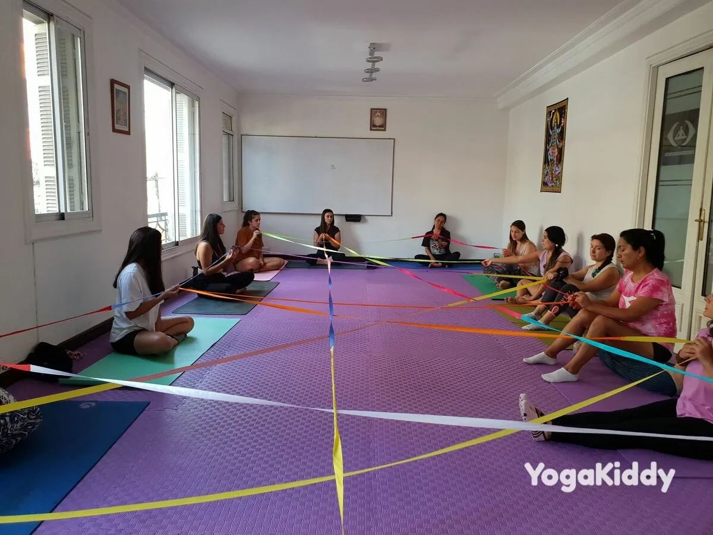